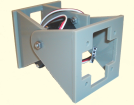
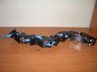
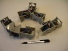
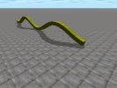
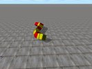

| English version |

Contenido
[ocultar]Robótica Modular y Locomoción: Aplicación a Robots Ápodos
- Descripción: Tesis Doctoral, con mención Europea
- Autor: Juan González Gómez
- Director: Dr. Eduardo Boemo Scalvinoni
- Calificación: Sobresaliente cum laude por unanimidad
- Universidad: Escuela Politécnica Superior. Universidad Autónoma de Madrid
- Fecha de la defensa: 21-Noviembre-2008
- Tribunal:
- Presidente: Dr. Vicente Matellán, Universidad de León
- Vocal: Dra. Cristina Urdiales, Universidad de Málaga
- Vocal: Dr. Jose María Cañas, Universidad Rey Juan Carlos
- Vocal: Dr. Houxiang Zhang, Universidad de Hamburgo (Alemania)
- Secretario: Dr. Miguel Ángel García García, Universidad Autónoma de Madrid
- Evaluadores Europeos:
- Dr. Jianwei Zhang, Universidad de Hamburgo (Alemania)
- Dr. Andrés Pérez-Uribe, Universidad de Canton du Vaud (Suiza)
- Evaluador del departamento de Ingeniería Informática de la UAM
- Dr. Francisco Gómez Arribas, Universidad Autónoma de Madrid
Preface by Dave Calkings
Snakes aren't the kind of cuisine most people look for when ordering, but the speciality of the house was Juan González-Gómez's amazing servo-driven snakebot. All snake robots I've ever seen --even Gavin Miller's amazing bots- cheat. They replicate a snake's motion, be it sinusoidal, caterpillar, or side-winding, but always with wheels on the bottom to eliminate friction and help the bot along. Gonzalez, however, perfected a system that most closely replicates how snakes really move. There are no wheels on his robots. Just his own servo housings. Watching a snake robot skitter across the floor is always cool. But when you pick up Juan's bot and realize that it's got no wheels and can still move the same way any snake can, you're truly awed. Even more inspiring is the fact that his bots are totally modular. You can have as few as two modules or as many as 256 -- good for both garter snakes and anacondas.
Dave Calkins
President of the Robotics Society of America,
Lecturer of the Computer Engineering Program at San Francisco State University
Founder of ROBOlympics/RoboGames - the International all-events robot competition
Resumen

Esta tesis se enmarca dentro del área de la locomoción de robots modulares y se centra específicamente en el estudio de las configuraciones con topología de una dimensión, que denominamos robots ápodos. El problema a resolver es cómo coordinar el movimiento de las articulaciones de estos robots para que puedan desplazarse tanto en una como en dos dimensiones.
Uno de los grandes retos es el desarrollo de un robot lo más versátil posible que sea capaz de desplazarse de un lugar a otro por diversos terrenos, por muy escarpados y abruptos que sean. Esto tiene especial interés en las aplicaciones en las que el entorno no es conocido, como la exploración de las superficies de otros planetas, navegación en entornos hostiles o las operaciones de búsqueda y rescate.
Para aumentar la versatilidad en la locomoción, la robótica modular propone la creación de robots a partir de unos módulos básicos. Cada configuración tendrá unas características locomotivas diferentes que deben ser estudiadas. Si además los módulos son autoconfigurables, los robots podrán seleccionar en cada momento la configuración más óptima para cada entorno.
Un tipo de controladores empleados son los bioinspirados, basados en CPG (Central pattern generators), que son unas neuronas especializadas que producen ritmos que controlan la actividad de los músculos en los seres vivos. En estado estacionario se comportan como osciladores de frecuencia fija lo que permite sustituirlos por un modelo simplificado formado por generadores sinusoidales. La ventaja es que son extremadamente sencillos de implementar y se requieren muy pocos recursos para su realización. Además, se pueden materializar usando diferentes tecnologías: software, circuitos digitales o incluso electrónica analógica.
En esta tesis establecemos una clasificación de los robots modulares según su topología y tipo de conexionado y planteamos la hipótesis de emplear generadores sinusoidales como controladores para la locomoción de los robots ápodos modulares con topología de una dimensión, de los grupos cabeceo-cabeceo y cabeceo-viraje. Los resultados muestran que este modelo simplificado es viable y los movimientos conseguidos son muy suaves y naturales. Los robots se pueden desplazar al menos utilizando cinco modos de caminar diferentes. Algunos de ellos, como el de rotación, son novedosos y no habían sido previamente estudiados ni implementados por otros investigadores, a nuestro leal saber.
Otro problema planteado es el de las configuraciones mínimas. Encontrar los robots de los grupos de estudio con el menor número posible de módulos y que se pueden desplazar en una y dos dimensiones. Se han encontrado las dos configuraciones mínimas capaces de ellos y las relaciones entre sus parámetros.
Se ha demostrado que las soluciones encontradas al problema de la coordinación son válidas para su utilización en robots reales. Han sido probadas en cuatro prototipos de robots ápodos construidos a partir de la unión de los módulos Y1, diseñados específicamente para esta tesis. La verificación para robots con diferente número de módulos se ha realizado utilizando el simulador desarrollado.
Por último se ha resumido el conocimiento sobre la locomoción de los robots ápodos de los grupos de estudio en 27 principios fundamentales.
Licencia
| This work is licensed under a Creative Commons Attribution-ShareAlike 3.0 Spain License. |
Descargar
Documentación
| Tesis-Juan-Gonzalez-Gomez.pdf | Tesis, en formato PDF (Español) |
| (En línea en Scribd) | Tesis, para su lectura en línea desde Scribd |
| Thesis_PhD_Juan_Gonzalez_Gomez-2008.pdf | Tesis, en Inglés |
| tesis-JGG-transparencias.pdf | Transparencias de la presentación, en formato PDF |
| (En línea en Scribd) | Transparencias, para su lectura en línea desde Scribd |
- Ficheros fuente:
| Tesis-JGG-fuentes.tar.gz | Fuentes de la Tesis. Hecha con Lyx 1.4.3. Dibujos con Inkscape 0.44 |
| Tesis-JGG-transparencias-src.odp | Fuentes de las transparencias. Hechas con OpenOffice 2.0.4 |
| Tesis-JGG-transparencias-figuras.zip | Fuentes de las figuras de la presentación. Hechas con Inkscape 0.44 |
Informes
| Nombre | Descarga |
|---|---|
| Prof. Dr. Eduardo Boemo Scalvinoni | (PDF ) (ODT) |
| Prof. Dr. Francisco Gómez | (PDF ) |
| Prof. Dr. Jianwei Zhang | (PDF ) (ODT) |
| Prof. Dr. Andrés Pérez-Uribe | (PDF ) |
Prototipos construidos
|  |
 |
 |
 |
| Módulos Y1 | Cube Revolutions | Hypercube | MiniCube |
Videos
Experimentos con robots reales

|

|

|

|
| VER VIDEO Locomoción en 1D |
VER VIDEO Locomoción en 1D |
VER VIDEO Locomoción en 2D |
VER VIDEO Locomoción en 2D |
Simulaciones
|  |
VER VIDEO Simulación de la locomoción en línea recta de un robot ápodo de 32 módulos del grupo cabeceo-cabeceo |

|
VER VIDEO Simulación de la locomoción en 2D de un robot ápodo de 32 módulos del grupo cabeceo-viraje. Se muestran los 8 tipos de modos de caminar encontrados mediante algoritmos genéticos |

|
VER VIDEO Simulación del robot Cube Revolutions (8 módulos, grupo cabeceo-cabeceo). Se muestran la variación en la locomoción del robot al aplicar diferentes parámetros. |
 |
VER VIDEO Simulación del robot Hypercube (8 módulos, grupo cabeceo-viraje). Se muestran diferentes modos de locomoción. |

|
VER VIDEO Simulación de la configuración mínima Minicube-I (2 módulos, grupo cabeceo-cabeceo) |

|
VER VIDEO Simulación de la configuración mínima Minicube-II (3 módulos, grupo cabeceo-viraje) |

|
VER VIDEO Simulación del modelo alámbrico de la configuración mínima PP (pitch-pitch). |
Cube Simulator 1.0

|
Cube Simulator. Herramientas para la simulación, control y obtención de datos de la locomoción de los robots ápodos. Incluye todo el software desarrollado para la realización de todos los experimentos de esta tesis. La plataforma de desarrollo es una Debian Gnu/Linux Etch. |
Cuaderno de Bitácora


Enlaces
Noticias
- 04/Mayo/2009: Tesis y transparencias subidas a Scribd. Añadidos enlaces para su lectura en línea.
- 26/Dic/2008: Añadido enlace a la página de Cube Simulator, con todo el software empleado para la simulación de los robots ápodos
- 17/Dic/2008: Simulación del modelo alámbrico de MiniCube
- 16/Dic/2008: Simulación de MiniCube
- 12/Dic/2008:
- Simulación del robot Cube Revolutions
- Simulación del robot Hypercube
- 10/Dic/2008: Añadido video de la simulación de la locomoción en 2D
- 08/Dic/2008: Añadido video de la simulación de la locomoción en 1D
- 04/Dic/2008: Añadido el abstract
- 02/Dic/2008: Añadido enlace a la bitácora de la lectura
- 27/Nov/2008: Primera version de esta página